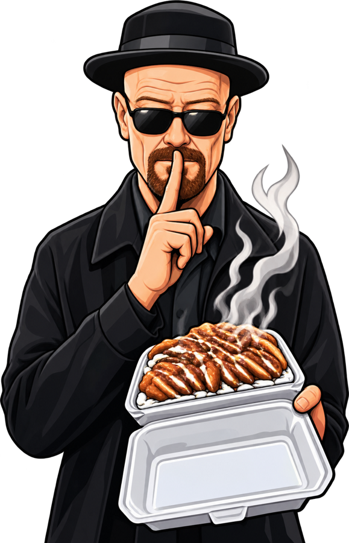

Transformer un univers de marque fort en habitude d’achat à Mérignac.
Décisions à validerPlan sur 6 mois
Le concept : le crousty passe au labo
Un univers décalé, un produit généreux.
Univers
Un univers « labo » décalé, porté par l’humour et le vocabulaire du protocole.
Promesse
« Pureté : 99,1 % » : une promesse mémorable, complétée par « 100 % crousty » et « 0 trace ».
Carte
Poulet halal, sauces maison, options healthy et végé : une carte plus large qu’un produit unique.
Marché & concurrence : gagner par l’identité
Les chaînes jouent sur le prix ; nous jouons sur l’univers.
Le marché
- Les chaînes attirent la catégorie avec la notoriété, le prix et les portions généreuses.
- À Mérignac, Big Canteen et Original Riz Crousty rendent la concurrence directe.
Breaking Rice
- Un espace distinctif : identité forte, expérience et prix moyen.
Diagnostic SWOT : capitaliser, sécuriser
Forces, leviers, vigilance, piste.
Univers distinctif, site sur mesure, offre variée et poulet halal.
Recherche locale, formats vidéo, fidélité et commande directe.
Dépendance à Uber Eats, guerre des prix et risque juridique sur le logo.
Créer un emblème original inspiré du labo.
Cibles & personas : quatre usages
Une réponse précise à chaque moment de consommation.
Étudiant
Bon rapport valeur-prix, contenu social et repas entre amis.
Actif du midi
Rapidité, halal, horaires clairs et itinéraire en un clic.
Famille
Menus partageables, avis fiables et photos fidèles.
Healthy / végé
Rendre les options visibles et désirables.
Charte graphique & supports : cohérence du labo
Un seul langage visuel, partout.
Fond noir-vert
#060A05
Vert acide
#7CF03A
Jaune sécurité
#F2C94C
Titres condensés (Oswald), étiquettes techniques et texte courant très lisible.
Décliner la marque sur menus, sacs, boîtes, stickers et flyers.
Relier les supports physiques au site et aux avis grâce aux QR codes.
Site web & administration : piloter en autonomie
Un site qui vend, un back-office que le gérant maîtrise.
Page d’accueil
Relie menu, commande, avis, FAQ et informations pratiques.
Parcours
Met en avant Uber Eats, le menu et les coordonnées du restaurant.
Espace /admin
Le gérant modifie plats, prix, horaires, promotions et FAQ.
Fiabilité
Renforcer les sauvegardes, la sécurité d’accès et la mesure des clics.
SEO & conversion : capter l’intention locale
Être trouvé au moment où l’on a faim.
Google Business
Compléter la fiche : photos, horaires, menu et avis.
Données structurées
Ajouter restaurant, menu et FAQ au site.
Cohérence
Vérifier le lien Uber Eats et harmoniser les prix sur tous les canaux.
Réseaux & fidélisation : créer le rendez-vous
Quatre piliers : le produit, le labo, la communauté, l’info.
TikTok
Vidéos courtes, croustillant, protocole et coulisses.
Vitrine produit, stories pratiques, avis et communauté.
Newsletter
Deux envois par mois, nouveautés et avantage abonné, avec consentement RGPD.
Les 6 prochains mois : du concept aux résultats
Cinq chantiers, quatre étapes.
- Sécuriser la marque avec un emblème original.
- Capter la recherche locale : Google, données structurées et SEO.
- Alimenter TikTok et Instagram avec une ligne éditoriale régulière.
- Fidéliser par la newsletter et les offres directes.
- Mesurer les clics, itinéraires, avis et abonnés.
Prochaines étapes : décisions à valider
À cocher ensemble (état non enregistré).
Web
Pub
Pourquoi & comment : accepter l’offre & le site
Pourquoi s’engager ?
- Gagner en indépendance : échapper à la dépendance exclusive d’Uber Eats et sécuriser vos portions.
- Une identité labo unique : se démarquer de la concurrence locale (Big Canteen, Original Riz Crousty).
- Capturer le trafic direct : unifier avis Google, newsletter, commandes et réseaux pour fidéliser.
Comment y arriver ?
- Site clé en main : moderne, ultra-rapide, optimisé mobile et sécurisé.
- Autonomie totale : une interface simple pour modifier menus, prix et promos.
- Déploiement sans effort : liens (Uber, Insta, TikTok) et visuels déjà intégrés.
- Stratégie sur 6 mois : un plan précis et chiffré pour passer du concept aux résultats.